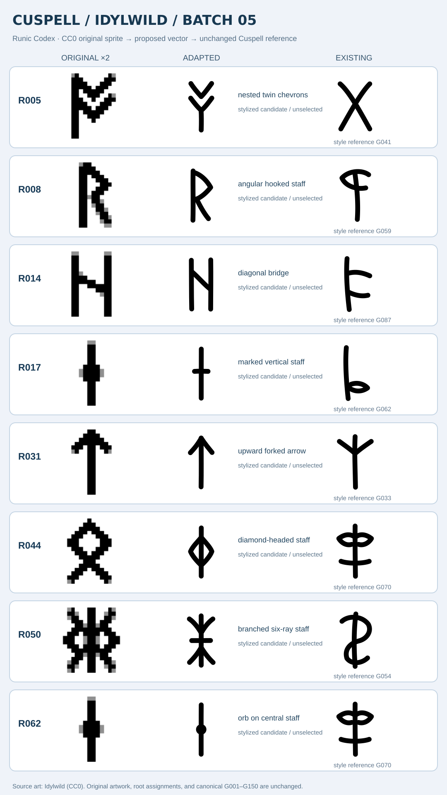
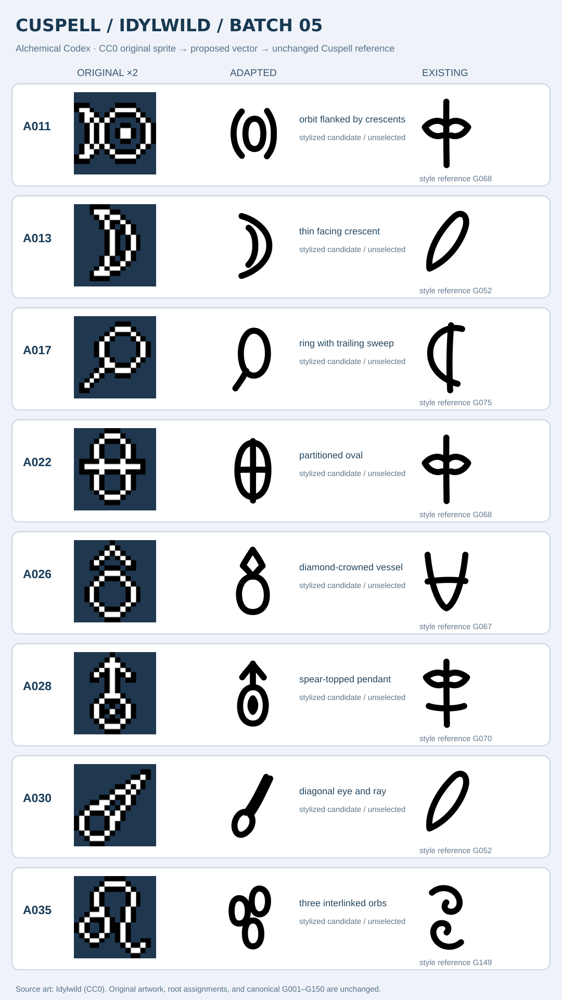

The source pixel art is unchanged. The editable candidate vectors are manual redraws with Cuspell's rounded 66-unit stroke system, and the existing G-series vectors on the right are purely visual references. Nothing is adopted or assigned a fixed root.
Runic Codex

Alchemical Codex

Source: Idylwild (CC0). The original archives and canonical 150 glyphs are untouched.